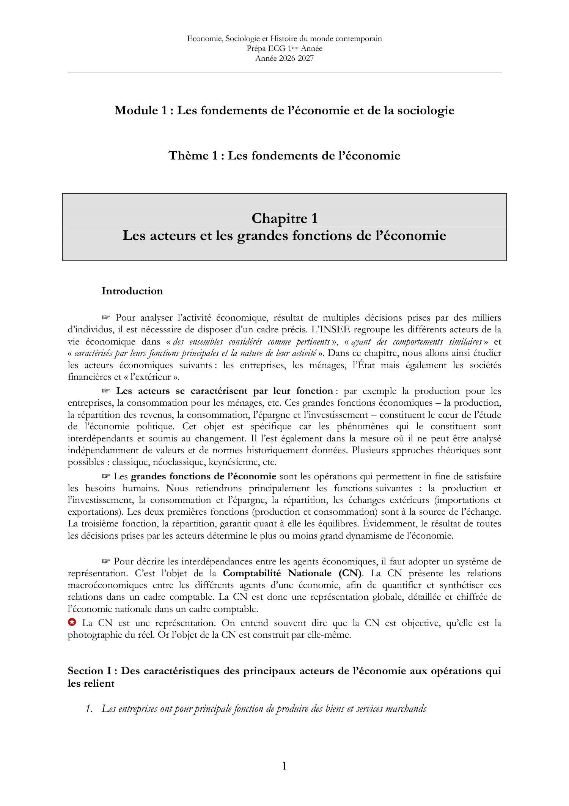

Les 35 pages sont conservées dans leur mise en page d’origine. Le texte extrait sert à rechercher un mot ; pour les tableaux et les formules, la page affichée fait référence. Les précisions pédagogiques renvoient au cours transcrit.
Introduction I.1 · Entreprises I.2 · Ménages I.3 · Administrations I.3–4 · État et finance I.5–6 · Extérieur et CN II.1 · Production PIB, RNB et équilibre Tableau entrées-sorties Limites du PIB II.2 · Revenus II.3 · Consommation II.3–4 · Épargne et investissement II.5 · Échanges et conclusion Précédente Aller à une page01 · Introduction · Acteurs, fonctions et comptabilité nationale 02 · Entreprises · Définition, statuts, organisation et taille 03 · Entreprises · Critères de taille et concentration productive 04 · Entreprises · Destruction créatrice, mondialisation et poids économique 05 · Entreprises · Valeur ajoutée et secteurs d’activité 06 · Production, capital et définition des ménages 07 · Ménages · Structure familiale, revenus et pouvoir d’achat 08 · Ménages · Composition du revenu disponible en 2024 09 · Ménages · Revenu nominal et pouvoir d’achat, 1960–2025 10 · Ménages · Prévisions, consommation et dépenses pré-engagées 11 · Ménages · Dépense finale et consommation effective 12 · Ménages · Poids des dépenses pré-engagées 13 · Ménages · Consommation, pouvoir d’achat et épargne 14 · Épargne · Flux, patrimoine et ratios 15 · Administrations publiques · Musgrave et fonctions de l’État 16 · Administrations publiques · Dépenses, recettes, dette et déficit 17 · Rosanvallon · Crises de l’État-providence et sociétés financières 18 · Reste du monde et construction de la comptabilité nationale 19 · Comptabilité nationale · Circuit, opérations et soldes 20 · Comptabilité nationale · Enchaînement des comptes 21 · Production · Travail, capital et combinaison productive 22 · Production · Rendements factoriels, rendements d’échelle et valeur ajoutée 23 · PIB · Valeur, volume et trois approches du calcul 24 · PIB · Comparaisons internationales, RNB et ressources 25 · Équilibre emplois-ressources et références sur le PIB 26 · Tableau entrées-sorties · Organisation et lecture 27 · TES 2017 · Ressources, consommations intermédiaires et emplois finals 28 · Leontief · Coefficients techniques et premières limites du PIB 29 · Au-delà du PIB · Bien-être, IDH et Stiglitz-Sen-Fitoussi 30 · Revenus · Hicks, revenus du travail et de la propriété 31 · Répartition · Revenus mixtes, EBE et partage de la valeur ajoutée 32 · Redistribution · Prélèvements, prestations et revenu disponible 33 · Consommation · Histoire, déterminants sociaux et loi d’Engel 34 · Épargne et investissement · Formes, évolution et déterminants 35 · Investissement, échanges extérieurs et interdépendance des fonctions Suivante

Page 1 / 35 · Introduction Ouvrir l’image en grand
Texte de la page sélectionnée
Sans JavaScript, le PDF intégral et le cours transcrit restent accessibles.
Page 1 · Introduction · Acteurs, fonctions et comptabilité nationale Page 2 · Entreprises · Définition, statuts, organisation et taille Page 3 · Entreprises · Critères de taille et concentration productive Page 4 · Entreprises · Destruction créatrice, mondialisation et poids économique Page 5 · Entreprises · Valeur ajoutée et secteurs d’activité Page 6 · Production, capital et définition des ménages Page 7 · Ménages · Structure familiale, revenus et pouvoir d’achat Page 8 · Ménages · Composition du revenu disponible en 2024 Page 9 · Ménages · Revenu nominal et pouvoir d’achat, 1960–2025 Page 10 · Ménages · Prévisions, consommation et dépenses pré-engagées Page 11 · Ménages · Dépense finale et consommation effective Page 12 · Ménages · Poids des dépenses pré-engagées Page 13 · Ménages · Consommation, pouvoir d’achat et épargne Page 14 · Épargne · Flux, patrimoine et ratios Page 15 · Administrations publiques · Musgrave et fonctions de l’État Page 16 · Administrations publiques · Dépenses, recettes, dette et déficit Page 17 · Rosanvallon · Crises de l’État-providence et sociétés financières Page 18 · Reste du monde et construction de la comptabilité nationale Page 19 · Comptabilité nationale · Circuit, opérations et soldes Page 20 · Comptabilité nationale · Enchaînement des comptes Page 21 · Production · Travail, capital et combinaison productive Page 22 · Production · Rendements factoriels, rendements d’échelle et valeur ajoutée Page 23 · PIB · Valeur, volume et trois approches du calcul Page 24 · PIB · Comparaisons internationales, RNB et ressources Page 25 · Équilibre emplois-ressources et références sur le PIB Page 26 · Tableau entrées-sorties · Organisation et lecture Page 27 · TES 2017 · Ressources, consommations intermédiaires et emplois finals Page 28 · Leontief · Coefficients techniques et premières limites du PIB Page 29 · Au-delà du PIB · Bien-être, IDH et Stiglitz-Sen-Fitoussi Page 30 · Revenus · Hicks, revenus du travail et de la propriété Page 31 · Répartition · Revenus mixtes, EBE et partage de la valeur ajoutée Page 32 · Redistribution · Prélèvements, prestations et revenu disponible Page 33 · Consommation · Histoire, déterminants sociaux et loi d’Engel Page 34 · Épargne et investissement · Formes, évolution et déterminants Page 35 · Investissement, échanges extérieurs et interdépendance des fonctions